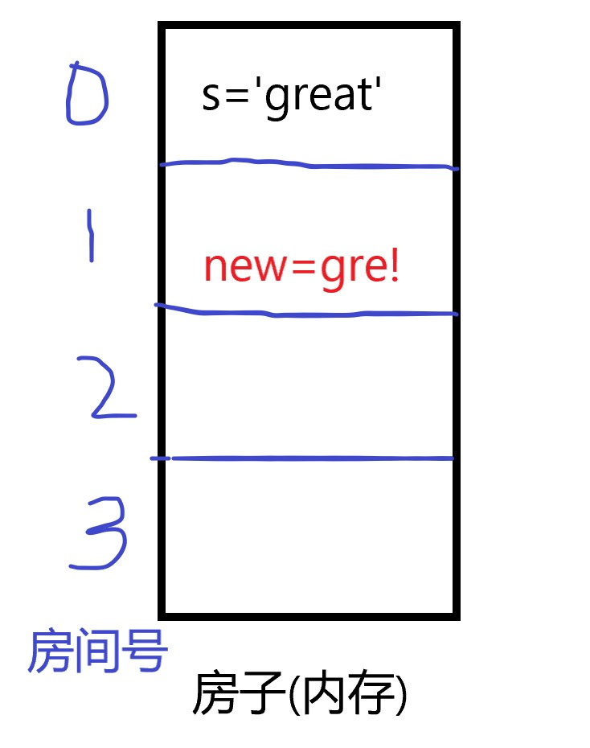

纵经千万次增删改，初心永不变-Python基础连载（四）
开篇
上一期介绍了字符串及其切片用法，相信你已经掌握。
那么这一期，我们就来学习一下字符串的增删改查等一系列方法，正是因为有了这些方法，你才能像呼吸一样自然地操作字符串。
需要指出的是，字符串是不可变类型，也就是说，只要一个字符串确定了，那么任何操作都不能修改该字符串。
此时的你，可能会很疑惑：既然字符串是不可变类型，那何来增删改这些操作呢？
解答这个问题的过程涉及到了内存，下面我将用画图的方式解释：
将内存看作一个大房子，房子中有许多小房间（地址单元），将它们分别编号为0，1，2，3。
在运行s='great'这一句代码时，会给变量s分配一个房间，假设分配的房间号是0：

现在，我想要修改变量s中的内容，由great改成gre!。由于字符串是不可变数据类型，所以不能直接在变量s所在的小房间（地址单元）内进行修改。
正确的做法是新开一个小房间，假如新开的小房间是1号，则首先会将s的前3个字符复制到房间1(这里用到了切片，你还记得吗)，然后在后面加一个!。这样，房间1内所保存的就是我们想要的结果了。
以上文字描述过程对应代码如下：
1 | s='great' |

看，原来的字符串变量s和修改后的字符串变量new在两个不同的房间。可以肯定的是，字符串不可不变类型，是不会变的；修改后的结果保存在了新的地址单元内。
Python中提供了id()函数，用于查看两个内存中的地址单元是否是同一个（这里，你就理解为查看两个小房间的房间号是不是同一个）：
1 | id(s) |
结果很明显了，房间号完全不一样！
总结来说：当对字符串执行增删改等操作时，最终的结果会保存到一个新的内存地址单元内（这里就是指小房间1）,而原来的内存地址单元(这里指的是小房间0)所保存的东西是不会发生任何改变的。
此时，可能又会有人问：如果代码改成这个样子呢？
1 | s='great' |
你看吧，s变了！我只要将修改后的字符串的名字也用s表示，字符串就变了呀！
答：非也。你把变量和变量所保存的内容搞混了。还记得变量那节的知识吗？变量是可以变化的，所以你这里将新的字符串也用原来的变量名来表示这一操作，实际上修改的是变量中的内容，原来的字符串中的内容被新的内容”抹去”了。你可以抹去我的存在，但我初心不改—by 字符串。想起来了吧~
好，说了这么多，终于可以开始今天的主要内容了。上面的内容对于零基础的同学来说，如果很难理解也没关系，只要记住字符串是不可变的，继续往下看即可。待到时机成熟，自然就理解了。
接下来的内容，都是一些记忆性的东西，以后用到时再来查也可以。
不过，强烈建议初学者跟着敲一遍，能记多少记多少，这样可以加深印象，培养写代码的手感，也有助于后续内容的学习。
字符串中常用的查找操作
1.find()
查找字符串中某个字符串首次出现的下标，不存在则返回-1
1 | s='abcdabcd' |
上面的查找方式是默认从下标为0处开始查找的，我们也可以手动修改从哪个下标处开始查找，只需要再传入一个下标即可：
1 | s='abcdabcd' |
也可以同时指定查找的开始下标和结束下标：
1 | s='abcdabcd' |
2.index()
和find()功能用法几乎一模一样，只是index()在查找失败时会报错，而find()返回-1：
1 | s='abcdabcd' |
3.rfind()
和find()一样，只是rfind()是从后面往前面查（从下标大的位置开始，往下标小的位置扫描）
1 | s='abcdabcd' |
4.rindex()
和index()一样，只是从后往前查询，并且找不到就报错
1 | s='abcdabcd' |
字符串中的替换操作
使用replace()
replace('old str','new str')用于将字符串中的old str替换成new str
1 | word='fantastic' |
也可以指定最大替换次数
1 | word='fantastic' |
这里指定的最大替换次数为1，因此只把第一个出现的a替换成了A。
字符串的拼接
使用+即可将若干字符串拼接成一个大的字符串。
1 | s1='1！' |
字符串中常用的分割操作
分割操作，指的是把一个字符串分割成几个小的部分。
【注意】这里可能会出现列表，元组，我们还没有讲到。不过相信我，它们并不影响本节的阅读。
1.split()
()里面填写分隔符，如果没有填写任何字符的话，则使用默认值(空格)``。
1 | s='a-b-c-d' |
我们也可以指定分割的次数，见下栗：
1 | s='a-b-c-d' |
2.rsplit()
从后往前分割，只有在指定分割次数时才能看得见效果，其余结果和split()是一样的
1 | s='a-b-c-d' |
3.partition
将字符串分割为3个部分，可用于分割一个文件的文件名和后缀名,直接上栗子
1 | file_name='xxx.py' |
但是，如果我的文件名和后缀名是这个样子的：xxx.yy.py，上面的做法就会有问题：
1 | new_file_name='xxx.yy.py' |
看，文件名本来是xxx.yy，而分割而来的文件名是xxx，同样后缀名也出错了。
这是因为，partition()是从左往右扫描的，扫描到第一个()内指定的分隔符(这里就’.’)就开始分割，分割符自己作为一部分，其左右两侧的字符串各作为一部分，总共3部分。
那也没有解决办法呢？简单，只需要将扫描的顺序改为从右向左就好了。下面的rpartition()就做了这件事。
4.rpartition()
来直接看栗子：
1 | new_file_name='xxx.yy.py' |
x[0]取出的便是文件名，x[2]取出的是后缀名。
字符串的格式化操作
1.ljust()
让字符串以指定长度显示，如果长度不够，则在右边填充。默认使用空格填充，可手动修改，看栗子
1 | x='Good' |
如果指定的长度小于原字符串本身的长度，则返回原字符串
1 | x='Good' |
2.rjust
与ljust功能相同，只不过是在左边进行填充
1 | x='Good' |
3.center
功能同上，只是在两侧填充
1 | x='Good' |
这里推荐一个记忆的方法：
ljust中的l代表left，意思是说让原字符串左对齐，所以是在右边填充；
rjust中的r代表right，意思是说让原字符串右对齐，所以是在左边填充；
center代表中间，意思是说让原字符串居中，所以是在字符串两侧填充；
删除字符串中的特定内容
1.strip()
注意：这个方法只能删除字符串开头或结尾的字符，不能删除中间部分的字符。
如果()内什么也不写，默认就是删除字符串中的空格
1 | x=' ab c d ' |
2.rstrip()
看完了上面的内容，这里已经不必多讲了吧，直接上栗子：
1 | x=' ab c d '#删除右边的空格 |
3.lstrip()
同样直接上栗子！
1 | x=' ab c d ' |
字符串中的大小写转换方法
1.upper()
将字符串中的所有字符全部变成大写
1 | s='abcDEFg' |
2.lower()
将字符串中的所有字符全部变成小写
1 | s='abcDEFg' |
3.swapcase()
大写变小写，小写变大写
1 | s='abcDEFg' |
4.title
让每个单词的首字母大写
1 | seq='hello world I Love Python' |
5.capitalize()
只让字符串的首字母大写，其余部分均小写
1 | seq='hello world I Love Python' |